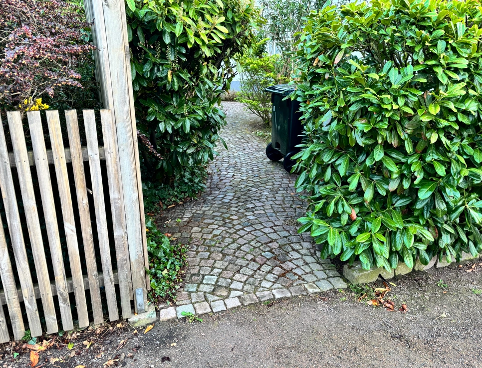
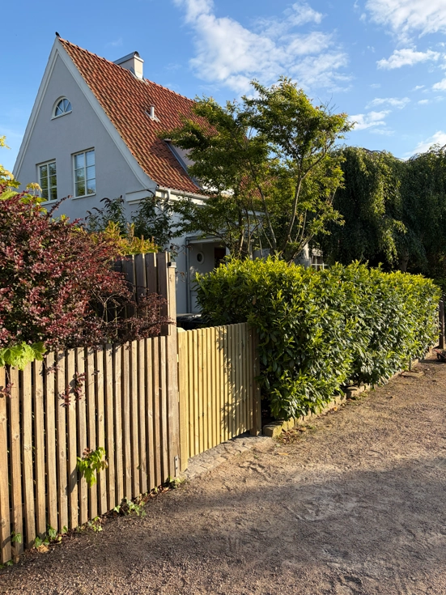
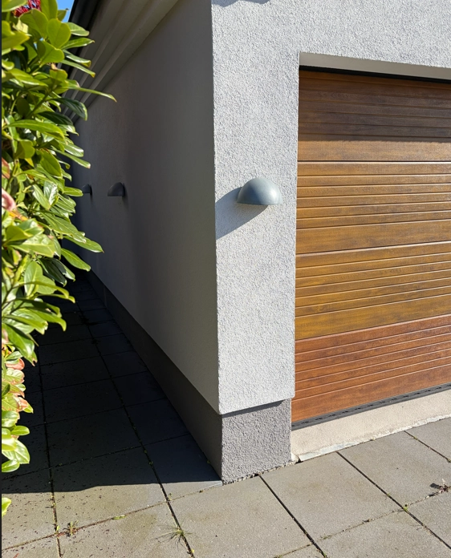
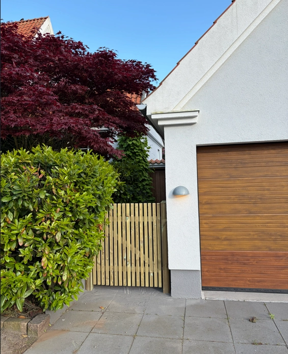
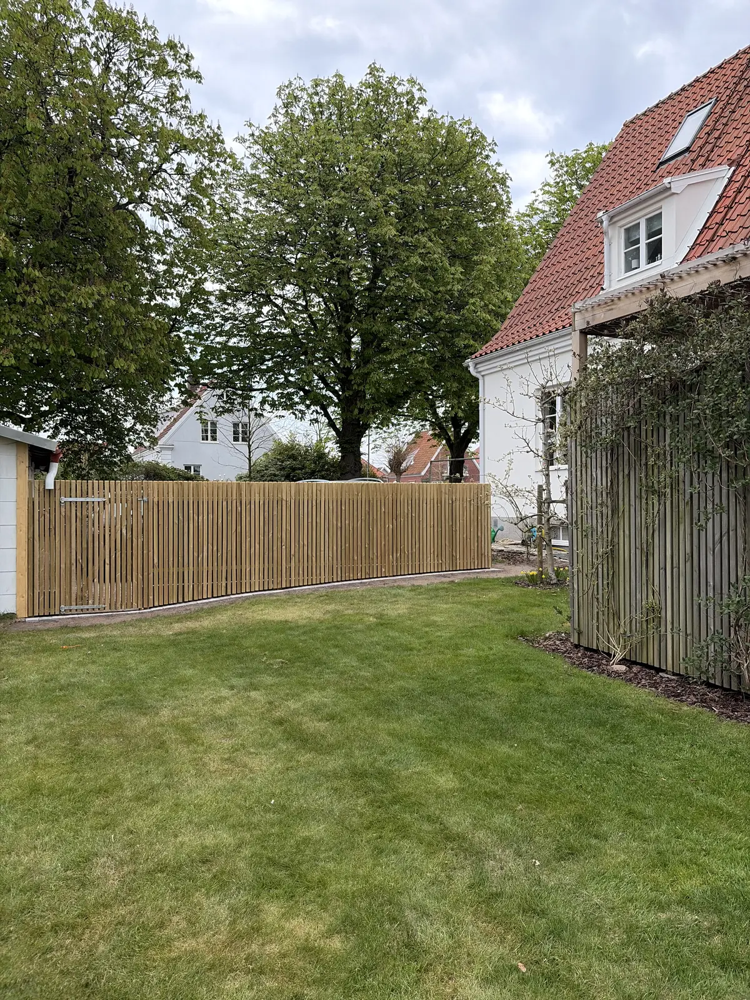

Helsingborg
Platsbyggd grind vid trädgårdsgång
En måttanpassad trägrind som tillverkades för att passa öppningen mellan det befintliga staketet och häcken. Grindens utformning anpassades till staketets stående träribbor.
Din lokala snickare
Platsbyggda staket, grindar och insynsskydd som anpassas efter din fastighet, dina önskemål och hur du vill använda din utemiljö.
F. Bergstrand Bygg AB hjälper dig med allt från en enstaka måttanpassad grind till kompletta staketlösningar, pergolor och avskärmningar för trädgårdar och uteplatser.

Snickeriarbeten för din utemiljö
Ett välbyggt staket eller en platsbyggd grind kan göra stor skillnad för både utseendet och funktionen på en fastighet. Det kan skapa tydliga avgränsningar, öka avskildheten och ge trädgården ett mer genomtänkt uttryck.
Jag bygger lösningar som anpassas efter platsens förutsättningar, husets karaktär och dina önskemål. Med rätt material, stabil grundläggning och noggrant utförda snickeriarbeten skapar vi en konstruktion som fungerar i vardagen.
Måttanpassat hantverk
Alla öppningar och fastigheter ser olika ut. En platsbyggd grind gör det möjligt att anpassa bredd, höjd, utformning och material efter den befintliga miljön.
Jag tillverkar och monterar trägrindar som kan anpassas till befintliga staket, häckar, byggnader och gångvägar.
Arbetet kan omfatta hela konstruktionen, från grävning och fastgjutning av stolpar till tillverkning av grindar, montering av gångjärn, beslag och slutjustering.
Du får en lösning där både funktion och utseende har tagits med i planeringen.
Trädgård och uteplats
Vill du skapa en tydligare avgränsning runt tomten, skydda uteplatsen från insyn eller bygga ett staket som passar husets arkitektur? Jag hjälper dig att hitta en lämplig lösning.
Staket och insynsskydd kan byggas med stående eller liggande brädor och ribbor. Höjd, avstånd mellan brädorna och konstruktionens utformning anpassas efter önskad funktion och utseende.
Jag hjälper även till med reparationer och utbyte av befintliga staket där exempelvis stolpar eller brädor har blivit skadade.
Platsbyggda uteplatser
En pergola kan skapa en tydligare och mer ombonad uteplats. Den kan användas som en fristående konstruktion i trädgården eller byggas i anslutning till huset och altanen.
Jag bygger måttanpassade pergolor i trä efter dina önskemål och platsens förutsättningar. Konstruktionen kan även kombineras med spaljéer, insynsskydd och andra platsbyggda detaljer.
Vill du bygga en helt ny uteplats kan jag hjälpa dig med både altanen, pergolan och tillhörande snickeriarbeten.
Utförda projekt
Två måttanpassade trägrindar i Helsingborg, tillverkade på plats och anpassade efter fastighetens befintliga miljö.

Helsingborg
En måttanpassad trägrind som tillverkades för att passa öppningen mellan det befintliga staketet och häcken. Grindens utformning anpassades till staketets stående träribbor.


Helsingborg
Ytterligare en måttanpassad trägrind från samma projekt. Grinden byggdes för att avgränsa passagen mellan byggnaden och den befintliga häcken.
Från grundläggning till färdig grind
I projektet i Helsingborg ansvarade jag för samtliga arbetsmoment. Båda grindarna tillverkades på plats och anpassades efter respektive öppning.
Samtliga arbeten utfördes av F. Bergstrand Bygg AB.
Fler utförda arbeten

Ängelholm
Ett utfört staketprojekt i Ängelholm med fokus på funktion, utseende och noggrant utförda snickeriarbeten.

Helsingborg
Ett utfört insynsskydd i Helsingborg som skapar en mer avskild utemiljö och anpassats efter platsens förutsättningar.
Så går det till
Du berättar om dina önskemål och vad du vill bygga eller förändra.
Vi går igenom mått, material, utformning och platsens förutsättningar. Du får en kostnadsfri offert.
Jag utför grundläggning, tillverkning och montering enligt den överenskomna omfattningen.
Konstruktionen färdigställs och vi går igenom det utförda arbetet tillsammans.
Lokalt byggföretag
F. Bergstrand Bygg AB utgår från Ängelholm och hjälper privatpersoner och företag i stora delar av nordvästra Skåne och södra Halland.
Jag bygger staket, grindar, insynsskydd och pergolor i bland annat Ängelholm, Båstad, Höganäs, Helsingborg, Halmstad, Klippan och Landskrona.
Finns din fastighet utanför dessa orter är du också välkommen att höra av dig, så ser vi över möjligheterna.
Vanliga frågor
Kostnaden beror bland annat på staketets längd, höjd, material, utformning och markens förutsättningar. Kontakta mig för en kostnadsfri offert anpassad efter ditt projekt.
Ja. Jag tillverkar platsbyggda trägrindar som anpassas efter öppningens mått, befintliga konstruktioner och dina önskemål.
Ja. Grindens utformning, höjd och material kan anpassas efter det befintliga staketet och fastighetens utseende.
Jag kan hjälpa till med hela konstruktionen, inklusive grävning, grundläggning och fastgjutning av stolpar när projektet kräver det.
Ja. Jag hjälper till med reparationer och utbyte av skadade stolpar, brädor, grindar och andra delar av befintliga konstruktioner.
Materialvalet beror på önskat utseende, konstruktion, väderexponering och framtida underhåll. Vi går igenom lämpliga alternativ vid planeringen av projektet.
Det beror bland annat på konstruktionens utformning, höjd, placering och vilka regler som gäller för fastigheten. Kontrollera med kommunen innan arbetet påbörjas om du är osäker.
Ja. Jag bygger måttanpassade pergolor i trä, både fristående och i anslutning till hus, altaner och uteplatser.
Ja. Pergolor kan kombineras med insynsskydd, spaljéer och andra platsbyggda snickerier för att skapa en sammanhängande uteplats.
Byggnation och reparation av staket och grindar ger normalt inte rätt till ROT-avdrag. Om arbetet ingår i ett större byggprojekt bedöms de olika arbetsmomenten enligt Skatteverkets villkor.
Ja. Du är välkommen att kontakta mig för en kostnadsfri offert utan köpkrav.
Fler byggtjänster
Staket, grindar och pergolor är ofta en del av ett större projekt. F. Bergstrand Bygg AB hjälper dig även med altaner, fasadarbeten och andra bygg- och snickeriarbeten.
Kontakta mig
Berätta om dina idéer och önskemål så går vi tillsammans igenom hur vi kan skapa en lösning som passar din fastighet.
Kontakta F. Bergstrand Bygg AB för en kostnadsfri offert.
F. Bergstrand Bygg AB
Ängelholm